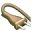

Конфигурирование SAMS просходит путем выставления значений в файле
/etc/sams.conf и в форме конфигурирования SAMS.
Настройка доступа к базе данных SAMS:
Настройка работы со SQUID:
Путь расположения SAMS:
Если вы хотите использовать редиректор SQUIDGUARD, необходимо отредактировать эти пункты
Если вы хотите использовать редиректор REJIK, необходимо отредактировать этот пункт
Если вы хотите использовать NTLM или AD авторизацию и у вас есть имена пользователей
на руссокм языке, необходимо изменить этот пункт:
Если вы хотите использовать авторизацию в Active Directory, отредактируйте эти пункты
CACHENUM=номер
- Номер прокси-сервера SQUID, зарегистрированного в SAMS. SAMS поддерживает
возможность управлениями несколькими прокси серверами SQUID (на данный момент
только команда на реконфигурирование).
SHUTDOWNCOMMAND=shutdown -h now
- Команда, выполняемая при нажатии на кнопку 
(SAMS->"Shutdown proxy server"). Данная команда добавлена для удобства удаленного
выключения прокси сервера.
В файле /etc/sams.conf хранятся значения, необходимые для
подключения к MySQL и работы консольных программ.
SAMS_DB=squidctrl
- имя базы данных SAMS
SQUID_DB=squidlog
- имя базы данных, где SAMS хранит информацию, полученную из логов SQUID
MYSQLHOSTNAME=localhost
- имя хоста, где стоит MySQL
MYSQLUSER=sams
- Имя пользователя MySQL, от имени которого будет работать SAMS
MYSQLPASSWORD=yourpasswd
- Пароль пользователя в MySQL
SQUIDROOTDIR=/etc/squid
- Путь к директории, где лежит конфиг SQUID
SQUIDLOGDIR=/var/squid/logs
- Путь к директории, где лежит файл логов SQUID
SQUIDCACHEFILE=access.log
- Имя файла логов SQUID
SQUIDPATH=/usr/sbin/squid
- Путь, где лежит SQUID
SQUIDCACHEDIR=/var/spool/squid
- Путь к кэшу SQUID. Необходимо для работы функции восстановления файлов из кэша SQUID
SAMSPATH=/usr/local/sams
- Путь, куда установлен SAMS
SQUIDGUARDLOGPATH=/var/log
SQUIDGUARDDBPATH=/var/db/squidguard
REJIKPATH=/path/to/rejik
RECODECOMMAND=iconv -f KOI8-R -t 866 %finp > %fout - команда перекодирования
имен пользователей из используемой у вас кодировки в dos-866
LDAPSERVER=192.168.0.1
- ip адрес или имя сервера Active Directory
LDAPBASEDN=domain.name
- ваш домен
LDAPUSER=username
- имя пользователя, входщего в группу администраторы домена
LDAPUSERPASSWD=passwd
LDAPUSERSGROUP=Users
- группа, в которую входят пользователи доменаю Для AD это обычно Users